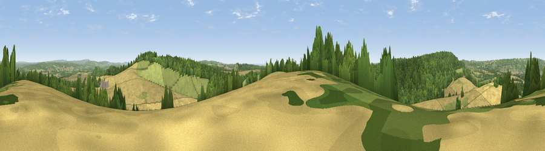

Viewpoint near Buriton
#6465 in England · top 9% of its area beats it · near BuritonWhere it is
The exact computed spot (SU 74925 18875). Click the marker for map links.
The view, rendered

A 360° render of this exact spot computed from the terrain model, tree cover and land cover — summer colours, afternoon light, calibrated against photographs of famous viewpoints. Real trees, hedges and buildings will differ in detail.
The panorama
Grey silhouette: terrain skyline in each direction (720 bearings, Earth curvature and refraction included). Dashed green: skyline with trees (+15 m) and buildings (+8 m) as obstacles. Blue strip: how far the ground is visible on each bearing.
Where the view opens
Wedge length = distance to the farthest visible ground on that bearing (vegetation-aware). Rings at 10, 25 and 50 km.
What fills the view
42% cropland · 35% woodland · 21% grassland · 1% built-up ·
Angular shares of the visible panorama (visual magnitude), not map area. Landscape diversity 0.50 (0–1 Shannon).
Key numbers
More beautiful places nearby
The staircase of upgrades: each row has a higher view potential than everything closer. Driving times are estimates from straight-line distance, calibrated against real road routing — check an actual route before setting out.
| Place | Direction | Drive | Score |
|---|---|---|---|
| Viewpoint near Buriton | WNW · 3 km | ~8 min | 80.0 |
| Beacon Hill | E · 6 km | ~12 min | 85.8 |
| Chanctonbury Ring | E · 39 km | ~59 min | 87.0 |
| Viewpoint near St. Lawrence | SSW · 46 km | ~67 min | 88.2 |
| Viewpoint near Niton | SSW · 50 km | ~71 min | 89.2 |
| Viewpoint near West Bexington | WSW · 124 km | ~148 min | 89.5 |
| The Knoll | WSW · 125 km | ~149 min | 91.0 |
50.96443, -0.93444 · source: screening · position refined by local search. Computed location — check access rights before visiting.